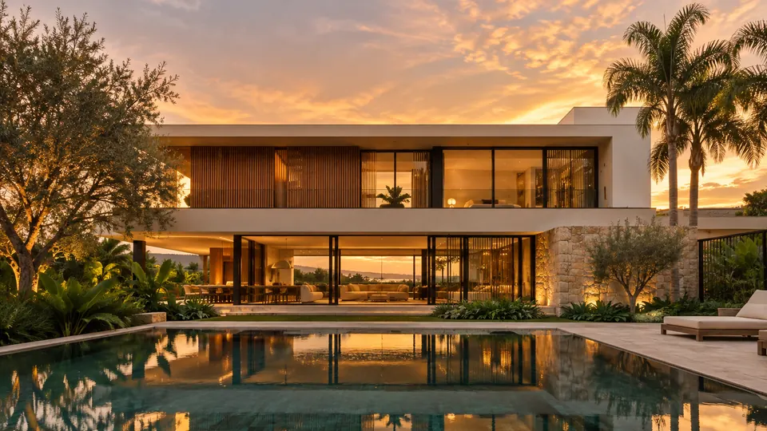
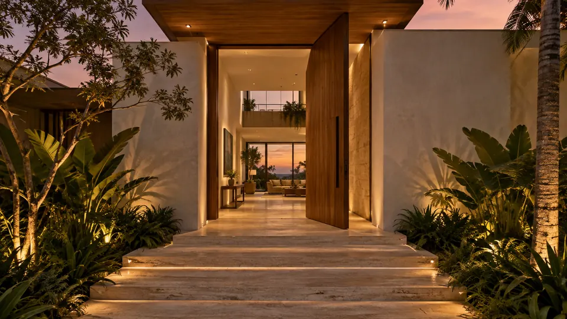
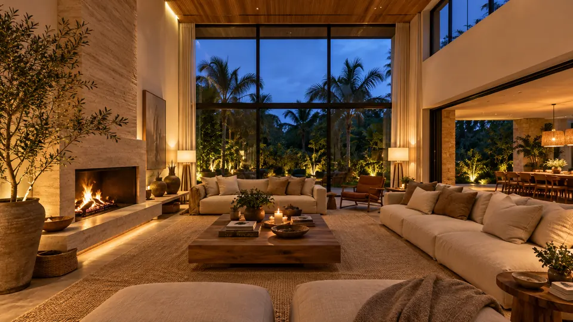
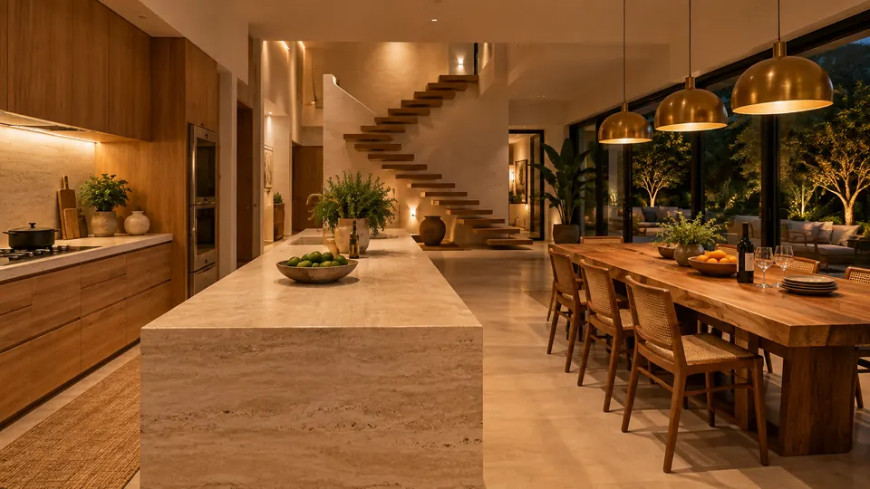
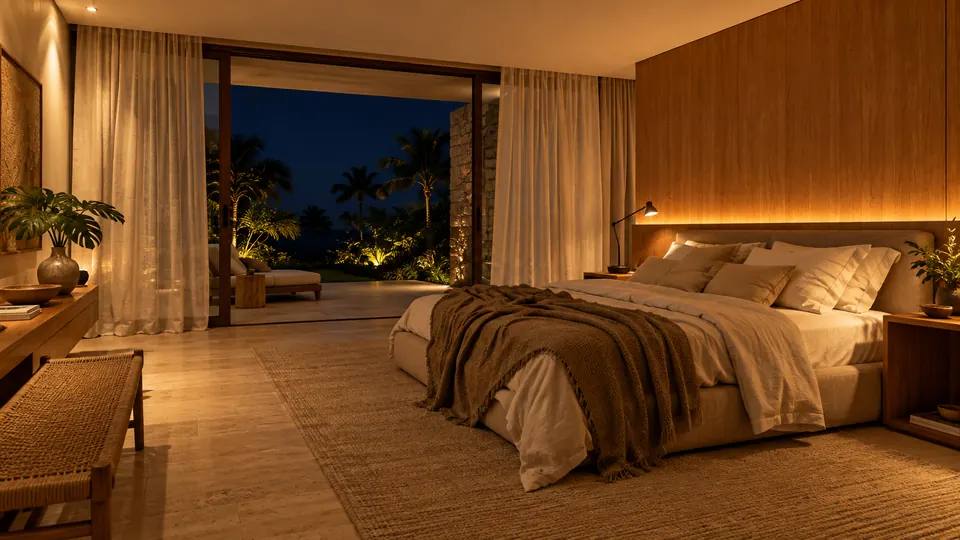
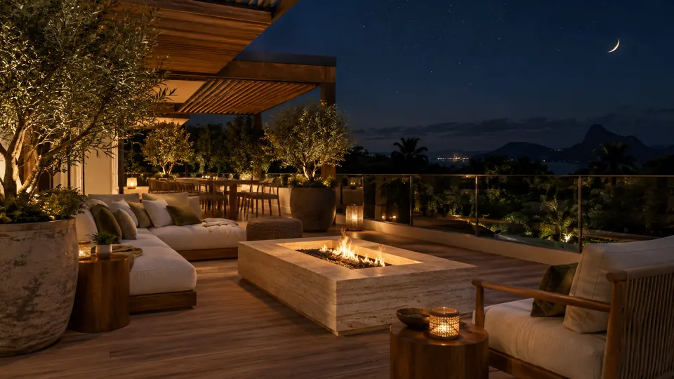
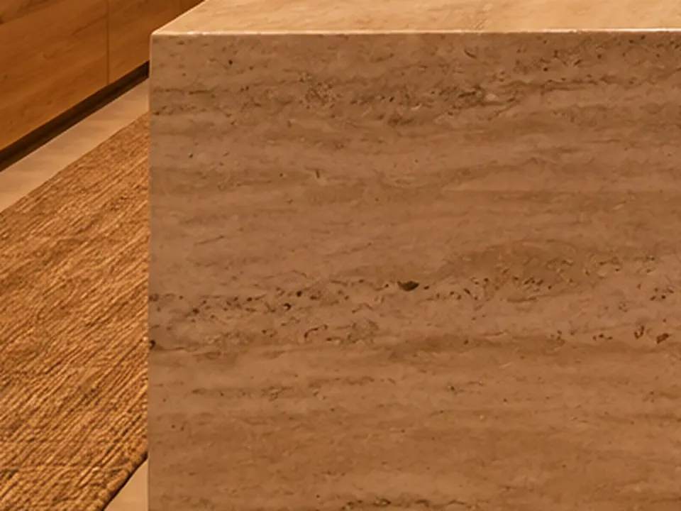
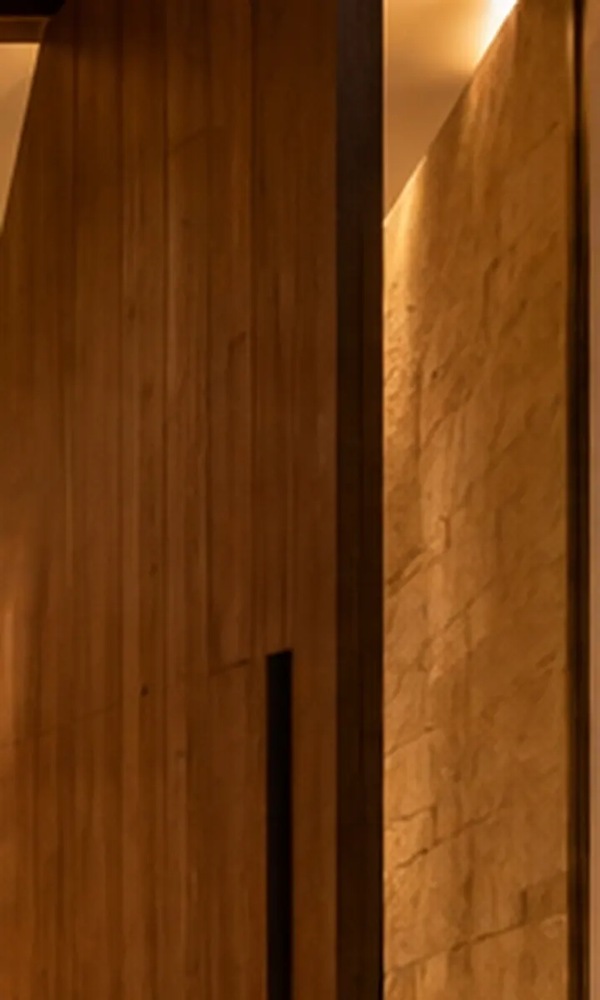
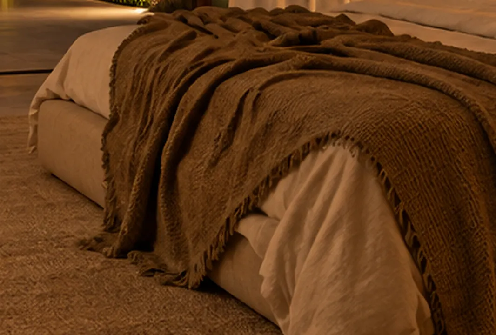
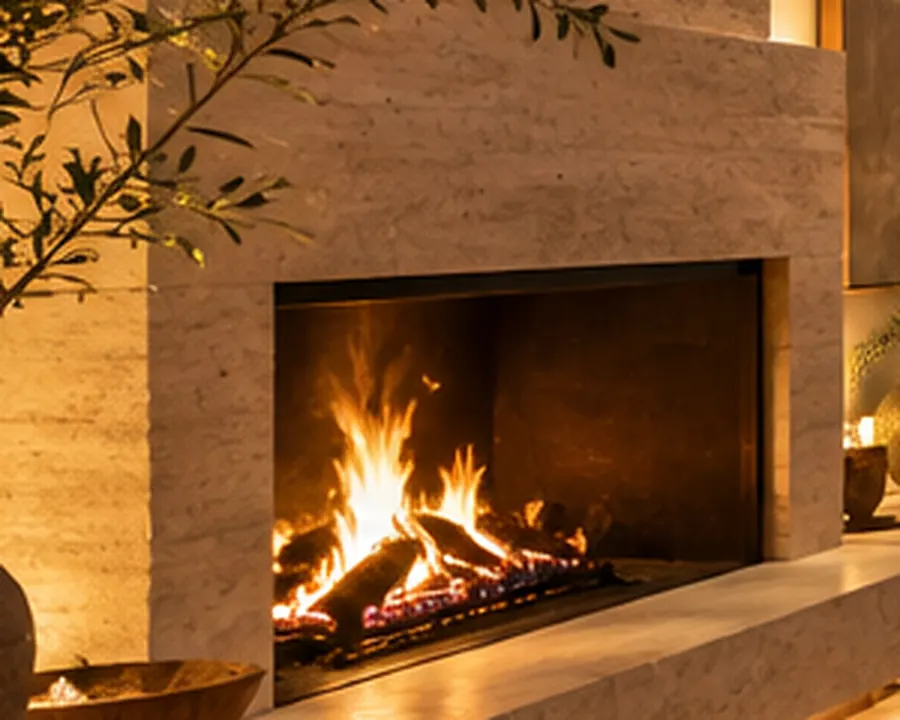

Projeto conceitual · site de exemplo
Casa Entardecer
Um passeio pela casa, do pôr do sol até a noite.
01 · Fachada
Chegar no fim da tarde.
A casa se abre para o poente. Os volumes de cal flutuam sobre a pedra e a água devolve a luz.

02 · Entrada
Uma porta que gira inteira.
Painel de freijó pivotante e degraus de travertino que convidam a entrar devagar.

03 · Sala
O fogo no centro da casa.
Pé-direito duplo, lareira em travertino e o jardim inteiro do outro lado do vidro.

04 · Cozinha e jantar
A mesa comprida.
Ilha em pedra maciça, madeira por todo lado e lugar para a família inteira.

05 · Quarto
Luz baixa e linho.
Iluminação escondida na cabeceira e a porta aberta para o jardim à noite.

06 · Terraço
A noite como teto.
Fogo de chão, pergolado em madeira e a vista até os morros.
A gente desenha a partir da luz.
Onde bate o sol da manhã, onde a família se encontra à noite, que material envelhece bonito. Cada casa começa por essas perguntas, antes de qualquer planta.




Do primeiro café à chave na mão.
- 1
Escuta
Visita ao terreno e uma conversa longa com a família sobre a rotina de verdade.
- 2
Estudo de luz
Maquete e simulação do sol em cada hora do dia, antes de fechar uma parede.
- 3
Projeto completo
Arquitetura, interiores e iluminação desenhados juntos, num só caderno.
- 4
Obra acompanhada
Visitas frequentes até a entrega, para o desenho virar casa sem surpresa.
Vamos desenhar a tua casa?
Agenda aberta para novos projetos